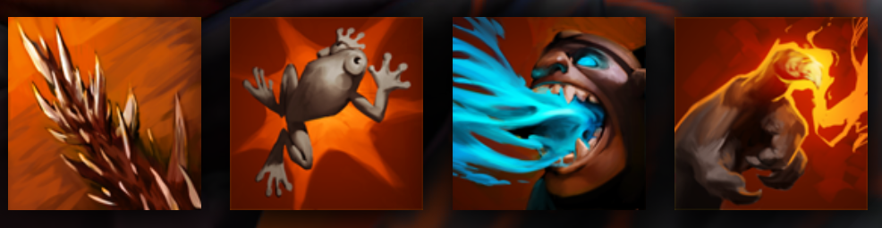

LION
STEALS ENEMY MANA TO FUEL HIS OWN ABILITIES
HISTORY
Once a Grandmaster of the Demon Witch tradition of sorcery, Lion earned fame among his brethren for fighting on the side of light and righteousness. But adulation corrupts. With powers surpassed only by his ambition, the mage was seduced by a demon and turned to evil, trading his soul for prestige. After committing horrible crimes that marred his soul, he was abandoned. The demon betrayed him, striking better deals with his enemies. Such was Lion's rage that he followed the demon back to hell and slew it, ripping it limb from limb, taking its demonic hand for his own. However, such demonoplasty comes at a cost. Lion was transfigured by the process, his body transformed into something unrecognizable. He rose from hell, rage incarnate, slaying even those who had once called him master, and laying waste to the lands where he had once been so adored. He survives now as the sole practitioner of the Demon Witch tradition, and those who present themselves as acolytes or students are soon relieved of their mana and carried off by the faintest gust of wind.
ABILITIES
PAIRD WELL WITH
LINA
AXE
SPRIT BREAKER